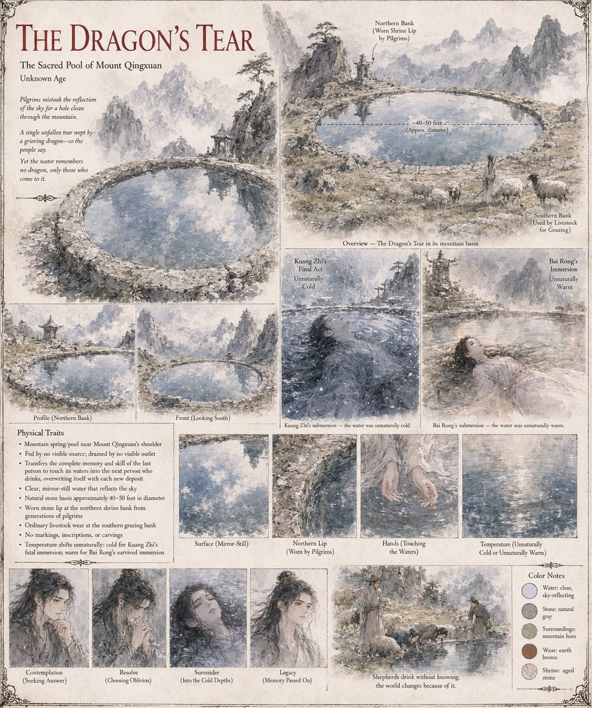

The Dragon's Tear
A mountain spring near the shoulder of Mount Qingxuan · the Catalyst of Case 0247 · Mythic Class
A spring in a stone bowl near the mountain's shoulder, wide enough that the shrine and the Hollow Hermit's hut stand on its northern lip while the gentler southern bank, a hundred paces off and screened by a shoulder of bare rock, is where the grazing paths actually reach the water. It is fed by no visible source and drained by no visible outlet, and so still that pilgrims mistake the reflection of the sky for a hole clean through the mountain. The story attached to it is that a dragon, grieving a mate slain in wars so old no record survives them, wept once and never again, and that the single tear never finished falling. Generations of monks built a shrine to the story rather than to the water, because the water offered nothing else to venerate: no light, no warmth, no voice. By every test the mountain's hermits devised in three centuries, it was only water.
What it does is copy. The complete memory and skill of the last person to touch its waters pass, without translation, to the next person who drinks, and the spring overwrites itself with each deposit. Kuang Zhi gives it seven drops of blood and his whole face, and dies. Eighty-nine hours later three shepherds drink at the grazing bank, and Bai Rong, the last and the longest, carries a stranger's lifetime down the mountain. The second time the water gives Shen Lie a copy and not a restoration, with the shepherd's six weeks braided into it; Bai Rong survives and keeps his own thirty-one years, and the Custodian's working hypothesis is that depth follows submersion time and the age of the memory. Nothing in the pool ever takes a life apart into pieces small enough to hand across only what is asked for. The sheet adds a basin forty to fifty feet across, a worn lip at the north bank, ordinary livestock wear at the south and no markings, and shows the water unnaturally cold for Kuang Zhi and unnaturally warm for Bai Rong; the manuscript gives none of those figures and says only that the second time the water was not as cold as water at that altitude had any right to be.